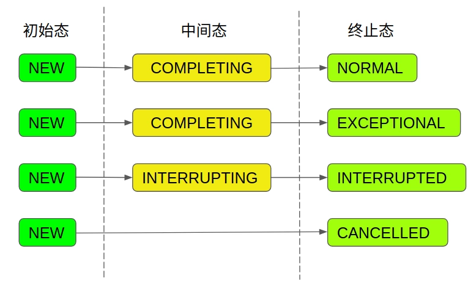
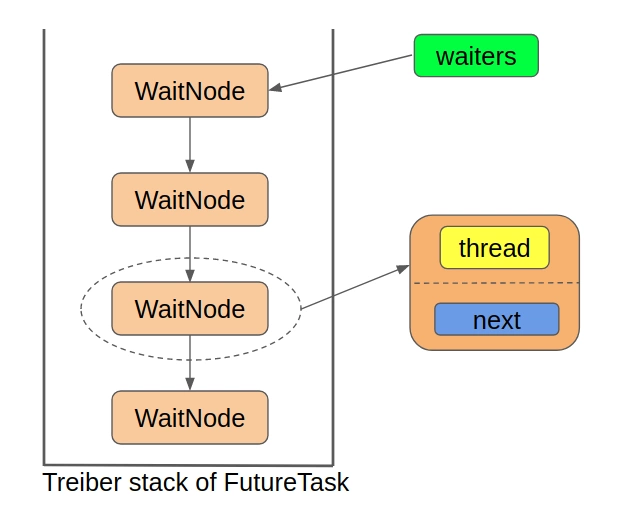

一、前言
上篇文章介绍了 FutureTask和它的亲戚们，我们了解了 Future 以及 FutureTask 在使用时会有什么样的效果，本文主要来研究FutureTask是如何工作的。在探究FutureTask源码之前，我们先来认识一下关于Java并发工具类的三板斧。
状态、队列、CAS
关于这个“三板斧”的概念，是 深入理解FutureTask 这篇博文介绍的，结合我之前阅读过得JUC中的源码，发现说的非常贴切和形象。以这三个方面为切入点来看源码，有助于我们快速的看清FutureTask的概貌：
二、状态
在FutureTask中，状态是由state属性来表示的，不出所料，它是volatile类型的，确保了不同线程对它修改的可见性：
1 | private volatile int state; |
state属性是贯穿整个FutureTask的最核心的属性，该属性的值代表了任务在运行过程中的状态，随着任务的执行，状态将不断地进行转变，从上面的定义中可以看出，总共有7种状态：包括了1个初始态，2个中间态和4个终止态。
其中需要注意的是state是volatile类型的，也就是说只要有任何一个线程修改了这个变量，那么其他所有的线程都会知道最新的值。虽说状态有这么多，但是状态的转换路径却只有四种：

- NEW：表示是个新的任务或者还没被执行完的任务。这是初始状态。
- COMPLETING：任务已经执行完成或者执行任务的时候发生异常，但是任务执行结果或者异常原因还没有保存到outcome字段(outcome字段用来保存任务执行结果，如果发生异常，则用来保存异常原因)的时候，状态会从NEW变更到COMPLETING。但是这个状态会时间会比较短，属于中间状态。
- NORMAL：任务已经执行完成并且任务执行结果已经保存到outcome字段，状态会从COMPLETING转换到NORMAL。这是一个最终态。
- EXCEPTIONAL：任务执行发生异常并且异常原因已经保存到outcome字段中后，状态会从COMPLETING转换到EXCEPTIONAL。这是一个最终态。
- CANCELLED：任务还没开始执行或者已经开始执行但是还没有执行完成的时候，用户调用了cancel(false)方法取消任务且不中断任务执行线程，这个时候状态会从NEW转化为CANCELLED状态。这是一个最终态。
- INTERRUPTING： 任务还没开始执行或者已经执行但是还没有执行完成的时候，用户调用了cancel(true)方法取消任务并且要中断任务执行线程但是还没有中断任务执行线程之前，状态会从NEW转化为INTERRUPTING。这是一个中间状态。
- INTERRUPTED：调用interrupt()中断任务执行线程之后状态会从INTERRUPTING转换到INTERRUPTED。这是一个最终态。
ps： 所有值大于COMPLETING的状态都表示任务已经执行完成(任务正常执行完成，任务执行异常或者任务被取消)。
将一个任务的状态设置成终止态只有三种方法：
- set
- setException
- cancel
二、队列
在FutureTask中，队列的实现是一个单向链表，它表示所有等待任务执行完毕的线程的集合。我们知道，FutureTask实现了Future接口，可以获取“Task”的执行结果，那么如果获取结果时，任务还没有执行完毕怎么办呢？那么获取结果的线程就会在一个等待队列中挂起，直到任务执行完毕被唤醒。
在并发编程中使用队列通常是将当前线程包装成某种类型的数据结构扔到等待队列中，在FutureTask中的等待队列的节点是什么样的结构：
1 | static final class WaitNode { |
FutureTask中的这个单向链表是当做栈来使用的，确切来说是当做Treiber栈来使用的，不了解Treiber栈是个啥的可以简单的把它当做是一个线程安全的栈，它使用CAS来完成入栈出栈操作(想进一步了解的话可以看这篇文章)。为啥要使用一个线程安全的栈呢，因为同一时刻可能有多个线程都在获取任务的执行结果，如果任务还在执行过程中，则这些线程就要被包装成WaitNode扔到Treiber栈的栈顶，即完成入栈操作，这样就有可能出现多个线程同时入栈的情况，因此需要使用CAS操作保证入栈的线程安全，对于出栈的情况也是同理。
FutureTask 用一个节点作为属性，表示队列的头结点：
1 | /** Treiber stack of waiting threads */ |

三、CAS操作
在java并发工具类中，存在大量的CAS操作，CAS操作大多数是用来改变状态的，在FutureTask中也不例外。我们一般在静态代码块中初始化需要CAS操作的属性的偏移量：
1 | // Unsafe mechanics |
从这个静态代码块中我们也可以看出，CAS操作主要针对3个属性，包括state、runner和waiters，说明这3个属性基本是会被多个线程同时访问的。其中state属性代表了任务的状态，waiters属性代表了指向栈顶节点的指针，这两个我们上面已经分析过了。runner属性代表了执行FutureTask中的“Task”的线程。为什么需要一个属性来记录执行任务的线程呢？这是为了中断或者取消任务做准备的，只有知道了执行任务的线程是谁，我们才能去中断它。
四、核心属性
1 | /** |
可以看出，FutureTask的核心属性只有5个：
- state：前面解释过得状态
- callable：Callable 实例，任务本尊。outcome属性代表了任务的执行结果或者抛出的异常，为Object类型，也就是说outcome可以是任意类型的对象，所以当我们将正常的执行结果返回给调用者时，需要进行强制类型转换，返回由Callable定义的V类型。
- outcome：任务最终执行的结果，代表了要执行的任务本身，即FutureTask中的“Task”部分，为Callable类型，这里之所以用Callable而不用Runnable是因为FutureTask实现了Future接口，需要获取任务的执行结果。
- runner：任务的执行者，Thread 对象
- waiters：等待队列
这5个属性综合起来就完成了整个FutureTask的工作，使用关系如下：
- 任务本尊：callable
- 任务的执行者：runner
- 任务的结果：outcome
- 获取任务的结果：state + outcome + waiters
- 中断或者取消任务：state + runner + waiters
五、总结
本文用“三板斧”的形式介绍了java并发工具的三个核心要素，和FutureTask的核心属性。下篇文章将介绍FutureTask的核心工作流程。